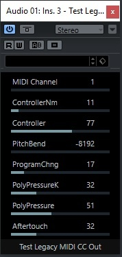
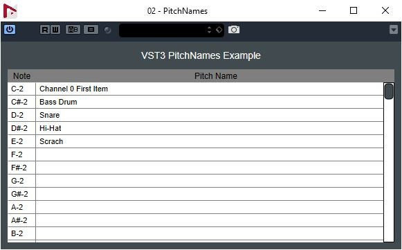
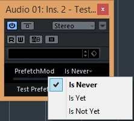
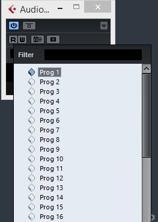

/ VST Home / What is the VST 3 SDK?
VST 3 Plug-in Examples
On this page:
- Introduction
- ADelay
- AGain
- TestChannelContext
- HostChecker
- TestLegacyMIDICCOut
- mda Plug-ins
- Note Expression Synth
- Note Expression Text
- Panner
- PitchNames
- TestPrefetchableSupport
- TestProgramChange
- Sync Delay
Related pages:
Introduction
The SDK includes some Plug-ins implementation examples. The Legendary AGain and ADelay, thanks Paul Kellet the Open-source mda Plug-ins, a basic "Note Expression Synth" supporting "Note Expression Event", an example of pitchnames support Plug-in, a VST 3 Host Checker which checks if a host is VST 3 compliant and more...
Check the folder "public.sdk/samples/vst" of the SDK!
ⓘ Note
They use cmake as project generator: Using cmake for building VST 3 plug-ins
In order to add your own Plug-ins check: Generate a new plug-in with the Project Generator App
ADelay
Very simple delay Plug-in:
- only one parameter (a delay)
Check the folder "public.sdk/samples/vst/adelay" of the SDK!
Classes:
- ADelayProcessor
- ADelayController
AGain
The SDK includes an AGain Plug-in which is a very simple VST 3 Plug-in. This Plug-in:
- is multichannel compatible
- supports bypass processing
- has an automated gain parameter
- has an Event input bus (allowing to use noteOn velocity to control the gain factor)
- has a VU peak meter
- uses the VSTGUI4 library
- a version of this Plug-in with side-chaining is available (showing a Plug-in using the same controller and different - components)
- a AAX version is available
- a AUv3 version is available

Check the folder "public.sdk/samples/vst/again" of the SDK!
Classes:
- AGain
- AGainWithSideChain (used for side-chain version)
- AGainController
AGain Sample Accurate
Simple Plug-in showing how to achieve sample accurate processing.
Based Check the folder "public.sdk/samples/vst/again_sampleaccurate" of the SDK!
TestChannelContext
Very simple Plug-in:
- showing how to use the Steinberg::Vst::ChannelContext::IInfoListener interface
- using a generic UI

Check the folder "public.sdk/samples/vst/channelcontext" of the SDK!
HostChecker
- Instrument, Panner and Fx Plug-in checking the VST 3 support of a host.
- It uses VSTGUI
- a AAX version is available

Check the folder "public.sdk/samples/vst/hostchecker" of the SDK!
TestLegacyMIDICCOut
Very simple Plug-in:
- showing how to use LegacyMIDICCOutEvent which allow to generate MIDI CC as output event
- VST parameters change which creates LegacyMIDICCOutEvent Event

Check the folder "public.sdk/samples/vst/legacymidiccout" of the SDK!
Classes:
- LegacyMIDICCOut::Plug
mda Plug-ins
- Effects (stereo to stereo Plug-ins):
- Ambience : Reverb
- Bandisto : Multi-band Distortion
- BeatBox : Drum Replacer
- Combo : Amp and Speaker Simulator
- DeEsser : High frequency Dynamics Processor
- Degrade : Sample quality reduction
- Delay : Simple stereo delay with feedback tone control
- Detune : Simple up/down pitch shifting thickener
- Dither : Range of dither types including noise shaping
- DubDelay : Delay with feedback saturation and time/pitch modulation
- Dynamics : Compressor / Limiter / Gate
- Image : Stereo image adjustment and M-S matrix
- Leslie : Rotary speaker simulator
- Limiter : Opto-electronic style limiter
- Loudness : Equal loudness contours for bass EQ and mix correction
- MultiBand : Multi-band compressor with M-S processing modes
- Overdrive : Soft distortion
- RePsycho! : Drum loop pitch changer
- RezFilter : Resonant filter with LFO and envelope follower
- RingMod : Simple Ring Modulator
- Round Panner: 3D panner
- Shepard : Continuously rising/falling tone generator
- SpecMeter : Stereo 13 Bands spectral Meter
- Splitter : Frequency / level crossover for setting up dynamic processing
- Stereo Simulator: Haas delay and comb filtering
- Sub-Bass Synthesizer: Several low frequency enhancement methods
- TalkBox : High resolution vocoder
- TestTone : Signal generator with pink and white noise, impulses and sweeps
- Thru-Zero Flanger : Classic tape-flanging simulation
- Tracker : Pitch tracking oscillator, or pitch tracking EQ
- Instruments (1 Event input, 1 stereo Audio output):
- DX10 : Sounds similar to the later Yamaha DX synths including the heavy bass but with a warmer, cleaner tone.
- EPiano : Simple EPiano
- JX10 : The Plug-in is designed for high quality (lower aliasing than most soft synths) and low processor usage
- Piano : Not designed to be the best sounding piano in the world, but boasts extremely low CPU and memory usage.
Based on the OpenSource mda Plug-ins (http://mda.smartelectronix.com/), this set of Plug-ins demonstrates how wrap DS- code in a VST 3 Plug-in.
Check the folder "public.sdk/samples/vst/mda-vst3" of the SDK!
Classes:
- BaseProcessor
- BaseController
- BaseParameter
Note Expression Synth
- Instrument Plug-in supporting note expression events
- It shows how easy it is to use VSTGUI
- a AUv3 version is available

Check the folder "public.sdk/samples/vst/note_expression_synth" of the SDK!
Classes:
- NoteExpressionSynth::Processor
- NoteExpressionSynth::Controller
- NoteExpressionSynth::Voice
Note Expression Text
- Plug-in visualizing the NoteExpression as Text
- It shows how easy it is to use VSTGUI4
Check the folder "public.sdk/samples/vst/note_expression_text" of the SDK!
Panner
- Simple Panner Plug-in showing how to support Panner category (mono to Stereo)
- It shows how easy it is to use VSTGUI

Check the folder "public.sdk/samples/vst/panner" of the SDK!
Classes:
- PlugController
- PlugProcessor
PitchNames
- Instrument Plug-in showing PitchNames support
- It shows how easy it is to use VSTGUI

Check the folder "public.sdk/samples/vst/pitchnames" of the SDK!
Classes:
- PitchNamesController
- PitchNamesProcessor
- PitchNamesDataBrowserSource
TestPrefetchableSupport
Very simple Plug-in:
- showing how to use the Steinberg::Vst::IPrefetchableSupport interface
- using a generic UI

Check the folder "public.sdk/samples/vst/prefetchablesupport" of the SDK!
TestProgramChange
Very simple Plug-in:
- showing how to support Program List
- using a generic UI

Sync Delay
Very simple delay Plug-in:
- showing how to support IProcessContextRequirements
Check the folder "public.sdk/samples/vst/syncdelay" of the SDK!